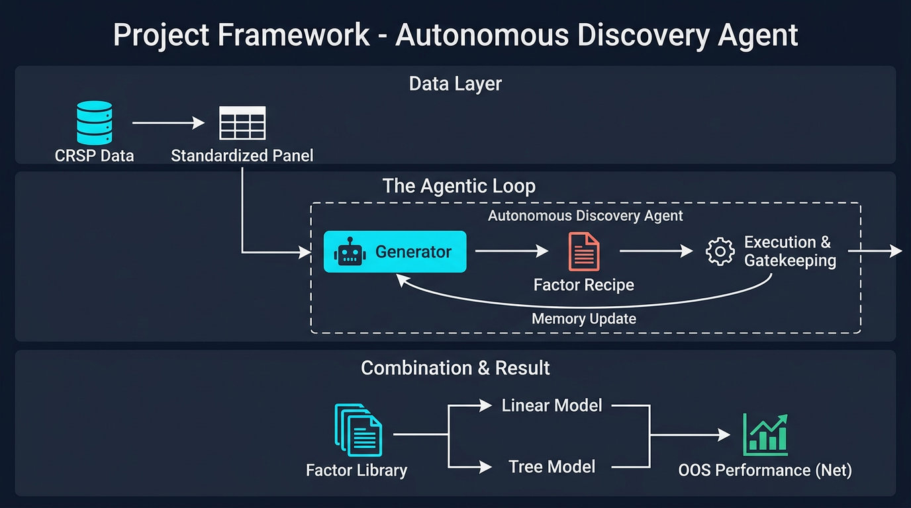

Agentic vs off-the-shelf LLM
The agentic pipeline delivers stronger ranking power and better compounding than zero-shot LLM factors; the process design drives the edge.
We turn factor discovery into a repeatable engine. AI agents propose and combine candidate signals; a disciplined gate keeps only what works. What you see here is judged strictly on out-of-sample performance—no overfitting, no backtest bias.
Long-short cumulative return, out-of-sample. Hover for values; click legend to toggle series.
The agentic pipeline delivers stronger ranking power and better compounding than zero-shot LLM factors; the process design drives the edge.
Long-short gross, out-of-sample.
The edge stays significant after market, size, value, profitability, investment, and momentum. Not explained away by standard factors.

Daily scores separate future winners from losers. We aim for persistent cross-sectional edge, not one-off backtests.
One gate for all candidates. Factors that pass enter the library; we then build composite scores with linear and tree models.
We judge on data never used for selection. Performance shown gross and net of costs; edge tested against standard factor controls.
Agent-driven discovery and combination beat naive LLM baselines. Gate, library, and combination design make the difference.
The edge holds after trading costs and standard factor controls. We build for live conditions.
Scaling to a broader research platform: more automation, stronger risk controls, wider coverage.